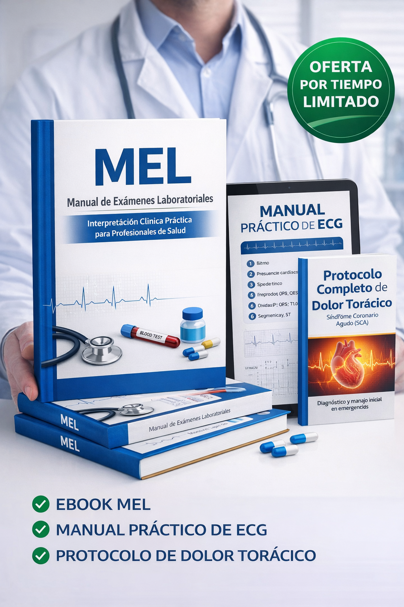

Domina la interpretación de más de 100 exámenes laboratoriales y lidera tus consultas con total seguridad científica.
Sí, Quiero Diagnosticar con Seguridad
¡OFERTA LIMITADA: TODO EL CONTENIDO DISPONIBLE HOY!
El vacío teórico: En la facultad aprendemos la teoría, pero frente al paciente, la duda sobre "qué valor es realmente patológico" paraliza.
Pérdida de tiempo: Buscar en libros densos mientras el paciente espera resta autoridad y agilidad en tu flujo de trabajo.
Aprende los "valores óptimos", no solo los del laboratorio. Identifica desequilibrios antes de que se conviertan en patologías.
Acceso inmediato a parámetros de Hemograma, Perfil Renal, Hepático, Hormonal y más. Sin paja, solo práctica.
Posiciónate como una autoridad. Un profesional que domina el laboratorio ofrece mejores tratamientos y diagnósticos más certeros.
Aprende a ejecutar e interpretar ECGs reconociendo rápidamente alteraciones críticas e isquemias.
El paso a paso exacto para manejar Síndromes Coronarios Agudos basado en marcadores y clínica.
"Pasé de tardar 15 minutos analizando un hemograma a hacerlo en segundos con total seguridad. El enfoque de valores óptimos cambió mi consulta."
- Dr. Carlos R., Médico General
"Es mi manual de cabecera en urgencias. El protocolo de dolor torácico es una joya para quienes estamos empezando."
- Dra. Elena M., Residente
ACCESO INMEDIATO Y PARA SIEMPRE
Valor Total: $97.00
$19.90
*Pago único. Sin suscripciones.
¡SÍ! QUIERO EL MANUAL AHORAGarantía Incondicional de 7 Días